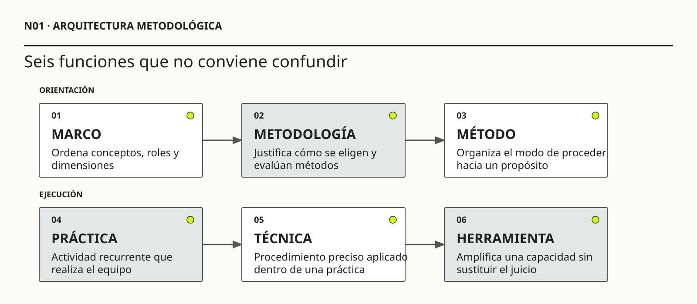

01
01Peter Checkland
OBRA PRINCIPAL UTILIZADALearning for ActionWiley, 2007 · con Jim Poulter

Una metodología profesional organiza el juicio sin sustituirlo.
Metodología sin recetas: intervenir cuando el problema todavía no está claro
Ruta de lectura: problema, distinciones, decisiones, prueba, transferencia y preparación para N02.

Nota. SIN NUM. identifica los aparatos de orientación y referencia que no integran la secuencia argumental.
Seis voces principales para ampliar, contrastar y discutir esta lectura.
01Wiley, 2007 · con Jim Poulter
 02
02Basic Books, 1983
 03
03Addison-Wesley, 1996 · con Donald A. Schön
 04
04Organization Science, 1991
 05
05Cambridge University Press, 2007 · reedición del argumento formulado en 1987
 06
06Currency · edición revisada, 2006
N01 no resume estas fuentes ni las convierte en una receta. Las pone en tensión para construir juicio profesional.
¿Para qué sirve una metodología si ninguna secuencia de pasos puede garantizar que comprendamos el problema ni que la intervención produzca el resultado esperado?

La metodología no elimina la incertidumbre. La vuelve visible, discutible y gobernable.
Un equipo de rescate entra en una zona montañosa cubierta por niebla. Lleva un mapa detallado con una ruta y tiempos estimados. Las responsabilidades están claras. Cada integrante sabe qué debe hacer. El grupo avanza con disciplina y celebra que todos los hitos se cumplen. Horas después descubre que el mapa corresponde a otro valle. La ejecución fue impecable; la orientación, incorrecta.
La escena parece exagerada, pero describe un riesgo cotidiano de los sistemas de información. Una organización puede completar con prolijidad todo su proceso de desarrollo y desplegar en fecha mientras conserva una definición equivocada del problema. El movimiento visible crea confianza. La calidad de los entregables puede ocultar que nadie comprobó si el mapa representa el territorio.
La salida consiste en tratar el mapa como una hipótesis. Hay que verificar señales del terreno y comparar relatos. También reconocer lo que queda fuera y acordar qué hallazgo obligaría a corregir la ruta. Una metodología profesional sirve precisamente para eso: organiza la posibilidad de descubrir un error antes de que avanzar resulte irreversible.
En Hotel Horizonte, el pedido de un nuevo PMS, una aplicación y un chatbot puede funcionar como ese mapa. Orienta la acción, pero todavía no demuestra dónde nace la sobreventa, por qué se contradicen las promesas ni qué parte del servicio debe cambiar. La primera obligación metodológica no es obedecer el mapa ni descartarlo. Es comprobar si ayuda a recorrer este territorio.
Imaginemos ahora que el equipo de rescate encuentra tres señales. En una roca aparece una marca que no figura en el mapa. Una persona del lugar afirma que el río cambió de cauce después de una tormenta. El altímetro indica que el grupo está doscientos metros más abajo de lo previsto. Ninguna señal demuestra por sí sola que el mapa sea inútil. Pero juntas cambian la decisión razonable: antes de seguir avanzando, conviene detenerse, contrastar fuentes y reconstruir la posición.
Eso es metodología en acción: relacionar una anomalía con una pregunta y esa pregunta con una decisión. La marca en la roca puede ser ruido; el relato local puede estar equivocado; el altímetro puede fallar. El rigor exige diseñar una comprobación proporcional al riesgo de continuar por el valle incorrecto, sin creer ciegamente en una señal.
También importa quién puede ordenar la detención. Si cada integrante ve una señal distinta pero nadie tiene autoridad para revisar la ruta, el grupo posee datos y carece de sistema de aprendizaje. Si la persona que diseñó el recorrido interpreta toda duda como resistencia, la metodología se vuelve una defensa del plan. Si, en cambio, existe un hito acordado para revisar la orientación, una evidencia adversa puede transformarse en aprendizaje antes de convertirse en accidente.
En una organización ocurre lo mismo. Recepción puede advertir que una habitación “liberada” todavía no puede asignarse; Comercial puede observar que una promoción promete algo que Operaciones no puede sostener; Tecnología puede confirmar que todos los servicios respondieron correctamente. Las tres afirmaciones pueden ser verdaderas y, aun así, el servicio completo puede fallar. El mapa metodológico debe permitir reunir esas verdades parciales sin suponer que alguna de ellas representa por sí sola el territorio.
La historia deja una idea que recorrerá toda la materia: avanzar no siempre significa aprender. El criterio de revisabilidad es la exigencia de declarar qué evidencia adversa podría cambiar una explicación, un alcance o una decisión. Si ningún hallazgo puede modificar el camino, el mapa ya no orienta; gobierna. Y una metodología que no admite ser corregida ha dejado de ser metodología para convertirse en obediencia.

Una metodología profesional organiza el juicio sin sustituirlo. Ayuda a formular preguntas, cuestionar evidencia y hacer visibles los supuestos que orientan una decisión. También coordina el aprendizaje y limita riesgos. Su rigor surge de conservar una relación defendible entre el contexto, el propósito, las prácticas elegidas y las decisiones revisables, no de repetir una secuencia universal.
N01 funciona como puerta de entrada y no como resumen anticipado de todo el bloque. Presenta una arquitectura de juicio que los números siguientes vuelven más precisa. Por eso nombra frontera, evidencia, poder, incertidumbre y experiencia sin pretender agotarlos. El criterio de lectura es sencillo: cada concepto que acá aparece como pregunta se convierte después en una capacidad profesional específica.
N02 amplía el objeto de análisis. Permite pasar de una aplicación aislada al sistema de información que conecta personas, reglas, datos, tecnologías y trabajo. N03 muestra que ninguna frontera es neutral y que los efectos pueden volver como retroalimentación. N04 distingue hechos, relatos, síntomas, hipótesis y decisiones para evitar que una afirmación convincente se confunda con evidencia.
N05 incorpora actores, poder y daño. N06 convierte incertidumbres en una agenda de aprendizaje proporcionada. N07 trabaja la entrevista como reconstrucción de episodios, mientras N08 contrasta lo dicho con el trabajo real y las adaptaciones que sostienen la operación. N09 sigue el recorrido completo de una persona para analizar experiencia, accesibilidad y adopción. N10 integra esas capacidades en un encuadre provisional que declara outcome, evidencia, límites y condición de revisión.
El avance cambia la calidad de la decisión, en lugar de limitarse a acumular técnicas. Al terminar N01, alcanza con reconocer que un pedido todavía no es un problema investigado. Al terminar N10, el estudiante debe poder defender la situación que interviene y explicar qué evidencia podría obligarlo a reformular el encuadre.
Este mapa también fija una disciplina para evitar repeticiones. N01 conserva la pregunta metodológica general. Los números siguientes profundizan un mecanismo particular y devuelven una consecuencia nueva. Cuando una noción reaparece, vuelve para producir una inferencia que antes no podía sostenerse. El cierre de esta lectura prepara así la transición inmediata hacia N02: antes de elegir cómo intervenir, hay que determinar qué sistema estamos mirando.
La dirección de Hotel Horizonte envía un pedido que parece concreto: reemplazar el PMS, lanzar una aplicación para huéspedes e incorporar un chatbot con inteligencia artificial. Hay presupuesto preliminar, urgencia comercial y una lista de problemas conocidos. La tentación profesional es responder con un plan de ejecución completo. El plan produce una sensación inmediata de avance. Ya hay responsables y entregables.
Sin embargo, todavía no sabemos qué fenómeno debe cambiar. Puede que el PMS sea lento, pero también que la latencia percibida surja cuando una reserva no tiene garantía, cuando el inventario de una OTA llega tarde, cuando recepción espera confirmación de housekeeping o cuando las categorías de habitación no significan lo mismo en todos los canales. Una aplicación podría disminuir preguntas simples o agregar otro lugar donde el huésped recibe una promesa incompatible. Un chatbot podría resolver consultas o ejecutar cancelaciones equivocadas con gran velocidad.
El pedido mezcla problemas posibles con soluciones preferidas y restricciones políticas. Todavía falta investigar el problema. A veces una solución ya funciona como restricción y no puede discutirse; el error aparece cuando se la toma como prueba de la causa, del outcome relevante o de la efectividad esperada.
La metodología entra precisamente en ese espacio. No elimina la ambigüedad; impide que la ambigüedad se oculte detrás de un cronograma o una herramienta.
Quien estudió Ingeniería de Software ya posee una base importante. Sabe construir software a partir de necesidades explícitas y conservar trazabilidad mientras modela, diseña y verifica. Aprendió que una solución no termina cuando compila y que la calidad excede el comportamiento funcional. También conoce la diferencia entre una idea informal y una especificación que otro equipo puede implementar y probar.
El SWEBOK Guide V4.0a organiza ese cuerpo de conocimiento y muestra que Ingeniería de Software ya incluye requisitos, arquitectura, calidad, operación, seguridad y práctica profesional. ISO/IEC/IEEE 15288:2023 agrega una perspectiva de ciclo de vida para sistemas completos. Ninguno de los dos prescribe una metodología universal ni decide qué situación organizacional debe intervenirse. Ese límite no reduce su valor. Indica dónde empieza la pregunta específica de METSI.
Esta materia no niega esa disciplina. Cambia el punto de partida. Antes de preguntar si los requisitos están bien escritos, pregunta cómo se construyó el problema que los vuelve relevantes. Antes de elegir una arquitectura, pregunta qué frontera organizacional debe explicarse. Antes de automatizar un proceso, pregunta qué trabajo real, excepción, autoridad o reparación quedaría incorporada en el sistema.
Lucy Suchman mostró que un plan no contiene la acción situada que pretende orientar. Las personas interpretan señales, reparan quiebres y coordinan con recursos que sólo aparecen en el episodio concreto. Para METSI, esta idea no significa abandonar planes o requisitos. Significa tratarlos como representaciones parciales cuya validez debe contrastarse con el trabajo y con las consecuencias que producen.
El puente puede formularse así: Ingeniería de Software ayuda a construir una solución de manera defendible; Metodología de Sistemas de Información agrega el razonamiento necesario para decidir qué situación merece esa solución, qué evidencia sostiene el encuadre y cómo revisar la intervención cuando el contexto responde de una forma no prevista.
Un ejemplo simple: una historia de usuario puede expresar que recepción necesita conocer el estado de una habitación para asignarla. Todavía queda por investigar quién produce ese estado, cuántos significados tiene, qué ocurre cuando dos fuentes discrepan, quién posee autoridad para corregirlo y qué promesa recibe el huésped mientras tanto. La historia puede ser correcta y, sin embargo, insuficiente para comprender el sistema.

En el lenguaje cotidiano estos términos se mezclan. Para intervenir con precisión conviene separarlos.
Un método es una forma organizada de proceder para alcanzar un propósito. Una entrevista contextual es un método para comprender actividad situada. Un experimento controlado es un método para producir evidencia causal bajo ciertas condiciones. Un análisis de incidentes es un método para reconstruir cómo interactuaron eventos, decisiones y condiciones.
Una metodología, en sentido fuerte, incluye el razonamiento mediante el cual se seleccionan, combinan y evalúan métodos. No se limita a decir qué hacer. Pregunta por qué conviene hacerlo ahora, qué supuesto trata, qué evidencia producirá, qué costo y riesgo introduce, y cómo cambiará la decisión según el resultado.
Un marco ordena conceptos, roles o dimensiones. Puede ayudar a no olvidar aspectos relevantes, pero no necesariamente prescribe una ejecución. Utilizar un marco de gobierno, por ejemplo, no decide por sí mismo cuánto control necesita un caso de uso particular.
Una práctica es una actividad recurrente y socialmente reconocible: limitar trabajo en curso, revisar un backlog, realizar una retrospectiva, modelar un proceso con actores o ejecutar una prueba de resiliencia.
Una técnica es una operación más acotada: ordenar eventos, clasificar afirmaciones, calcular un percentil, formular un escenario de calidad o comparar alternativas mediante criterios.
Una herramienta soporta una actividad: una pizarra, una planilla, un editor BPMN, una plataforma de tickets o un asistente generativo. La herramienta puede facilitar y condicionar el trabajo, pero no contiene el criterio para usarla. Una plantilla de mapa de actores no sabe quién está siendo omitido; un generador de diagramas no sabe si la frontera elegida desplaza riesgo.
Estas distinciones no persiguen pureza terminológica. Evitan sustituciones frecuentes. Comprar una herramienta no equivale a adoptar una práctica. Completar prácticas no equivale a tener una metodología. Nombrar un marco no demuestra que se comprendió el contexto. Aplicar una técnica correctamente no garantiza que la pregunta sea relevante.
Una metodología situada debe ayudar a recorrer, al menos, seis familias de preguntas.
Checkland y Poulter proponen trabajar con situaciones problemáticas antes que suponer que el problema ya viene definido. Esa diferencia es central: una metodología no recibe un objeto neutral, sino un conjunto de interpretaciones, intereses y relaciones que deben hacerse discutibles antes de decidir qué cambiar.
La primera se refiere al sistema y al problema. ¿Qué situación observamos? ¿Quién la vive? ¿Qué frontera vuelve tratable la intervención? ¿Qué mecanismos podrían explicar los síntomas? ¿Qué queda afuera y con qué consecuencia?
La segunda se refiere al conocimiento. ¿Qué sabemos, quién lo afirma y con qué alcance? ¿Qué inferimos? ¿Qué suponemos provisionalmente? ¿Qué dato falta? ¿Qué evidencia sería suficientemente confiable para la decisión en juego?
La tercera se refiere a alternativas. ¿Podemos intervenir reglas, responsabilidades, información, proceso, incentivos o coordinación antes de construir software? ¿Qué opciones preservan reversibilidad? ¿Qué opción produce aprendizaje temprano? ¿Qué dependencia crea cada una?
La cuarta se refiere a entrega y operación. ¿Cómo se divide la intervención sin separar artificialmente valor y riesgo? ¿Cómo funcionará bajo carga, error, caída de integración y uso no previsto? ¿Quién observa, responde y aprende?
La quinta se refiere a responsabilidad. ¿Quién puede decidir? ¿Quién soporta el daño? ¿Qué derechos, trabajo o autoridad cambia la solución? ¿Quién puede cuestionarla, revertirla o repararla?
La sexta se refiere a revisión. ¿Qué evidencia haría cambiar el encuadre? ¿Qué condición obliga a detener? ¿Cuándo una decisión deja de ser válida? ¿Cómo se conserva la historia para no fingir que siempre supimos lo que hoy creemos?
Estas preguntas forman un ciclo, no una lista de control que se completa una vez. Una entrevista puede ampliar la frontera. Un modelo puede mostrar que dos áreas usan el mismo término para estados distintos. Un experimento puede invalidar el outcome elegido. Un incidente puede revelar que la estrategia de operación contradice el diseño. La metodología es rigurosa cuando permite volver atrás sin convertir la revisión en fracaso administrativo.
Supongamos que una gerenta afirma: “el check-in es lento”. La frase parece clara, pero todavía no sabemos qué significa lento, para quién ni en qué parte del recorrido. Un equipo orientado por la solución podría pedir una pantalla más rápida. Un equipo metodológico comienza separando observación, interpretación y preferencia.
La observación podría ser: durante el turno de la tarde, doce de treinta huéspedes esperaron más de diez minutos desde que llegaron al mostrador hasta que recibieron la llave. La interpretación podría ser: la espera se produce porque la aplicación de recepción responde con demora. La preferencia podría ser: queremos un check-in móvil. Las tres frases cumplen funciones distintas. La primera describe un fenómeno medible; la segunda propone un mecanismo causal; la tercera anticipa una alternativa.
El siguiente paso no es discutir cuál frase “suena mejor”, sino preguntar qué evidencia discrimina explicaciones. Si el tiempo se consume antes de abrir el PMS, tal vez la causa sea la fila o la falta de documentación. Si se consume después de asignar la habitación, puede existir una espera por autorización, limpieza o garantía. Si la pantalla responde rápido pero el recepcionista alterna entre cuatro fuentes, la latencia no está dentro de una aplicación sino entre componentes, significados y responsabilidades.
Con esa distinción, el equipo puede diseñar una práctica pequeña: observar diez episodios completos, registrar hitos y reconstruir dos excepciones. El resultado no es todavía una solución, sino una decisión mejor fundada. Quizá convenga integrar estados; quizá rediseñar la promesa de llegada; quizá cambiar el texto de confirmación; quizá probar autoservicio en un segmento. La metodología convierte una queja general en una secuencia de preguntas cuyo resultado puede cambiar lo que se hará.
Este ejemplo muestra por qué la materia no compite con Ingeniería de Software. Cuando la intervención elegida incluya software, todavía habrá que especificar, diseñar, construir, verificar y operar con calidad. METSI trabaja en la articulación previa y concurrente: qué fenómeno justifica ese esfuerzo, qué sistema lo produce, qué evidencia sostiene el encuadre y qué señal obligará a revisarlo.

Planificar sigue siendo útil aunque el futuro cambie. Un buen plan expresa una hipótesis coordinada sobre acciones y dependencias, junto con la evidencia que permitirá revisar decisiones. Su función es detectar desvíos en vez de fingir que no existen.
La octava edición del PMBOK Guide consolida los doce principios de la séptima en seis y refina los dominios de desempeño de ocho a siete. También reintroduce los grupos de procesos como Áreas de Foco e integra cuarenta procesos no prescriptivos dentro de los dominios, en lugar de convertirlos en una secuencia obligatoria. ISO/IEC/IEEE 24748-1:2024 trata asimismo la adaptación del ciclo de vida como una decisión situada. Ambos aportes son útiles si el equipo puede explicar qué función conserva al adaptar; usados como listas de cumplimiento, pueden producir exactamente la rigidez que intentan evitar.
El problema aparece cuando el plan oculta la incertidumbre. Si una fecha se presenta como compromiso firme antes de comprender integraciones, regulación y capacidad organizacional, funciona como ficción de control. Si se etiqueta todo como “ágil” para no declarar compromisos, funciona como ficción de adaptación. En ambos casos la metodología se convierte en retórica.
Una planificación defendible distingue, por ejemplo:
Hotel Horizonte puede comprometer dos semanas para reconstruir casos de sobreventa, observar check-in y acordar estados. No puede prometer honestamente que un nuevo PMS resolverá la experiencia en seis meses sin conocer las causas, los contratos y la migración. La primera promesa es un compromiso de aprendizaje; la segunda es una afirmación causal todavía no sostenida.
La rigidez repite prácticas aunque el contexto cambie. La improvisación las modifica sin poder justificar por qué. El rigor adaptativo se ubica entre ambas.
Schön describió la práctica profesional como una conversación reflexiva con una situación que responde y sorprende. El rigor no reside solamente en aplicar conocimiento previo, sino en advertir cuándo la respuesta del contexto contradice el encuadre y exige reformularlo. Una intervención que nunca modifica su pregunta inicial puede ser consistente y, al mismo tiempo, estar aprendiendo muy poco.
Cambiar de entrevista a observación puede ser riguroso si los relatos no explican el trabajo real y se documenta qué pregunta busca responder la observación. Abandonar un modelo conceptual puede ser riguroso si no contribuye a ninguna decisión y otro artefacto conserva la semántica necesaria. Reducir el alcance de un piloto puede ser riguroso si preserva la hipótesis crítica y reduce daño.
En cambio, eliminar validación porque “no hay tiempo” no es adaptación si la decisión depende de comprender una excepción. Agregar ceremonias de un marco popular no es rigor si nadie puede explicar qué riesgo reducen. Producir documentación abundante no es rigor si las contradicciones permanecen escondidas entre documentos.
La trazabilidad es una de las señales más fuertes de rigor. Un tercero debería poder reconstruir:
No se necesita registrar cada conversación. Se necesita conservar las decisiones cuya pérdida impediría comprender o revisar la intervención.
Elegir una metodología no es una decisión neutra. Determina quién participa, qué cuenta como evidencia, qué incertidumbre se acepta y quién tiene autoridad para cerrar una controversia.
Un taller con gerentes puede producir alineación rápida y excluir a quienes realizan el trabajo. Una encuesta puede amplificar respuestas fáciles de codificar e invisibilizar experiencias minoritarias. Un backlog priorizado exclusivamente por valor comercial desplaza accesibilidad o riesgo operacional. Un modelo entrenado con decisiones históricas puede convertir relaciones de poder previas en una recomendación aparentemente objetiva.
Incluso la velocidad tiene distribución. Reducir el tiempo de check-in puede mejorar la experiencia promedio y aumentar el trabajo previo que housekeeping realiza sin visibilidad. Automatizar respuestas puede disminuir carga de recepción y transferir al huésped la tarea de interpretar una excepción. Una metodología responsable pregunta no solo si la intervención funciona, sino para quién, bajo qué condiciones y a costa de quién.
Esto no significa que toda decisión requiera consenso universal. Algunas autoridades tienen responsabilidad formal y deben decidir. La exigencia es que la metodología haga visibles conocimiento, impacto y posibilidad de objeción, en lugar de confundir autoridad con verdad.
Pensar la metodología como una secuencia de actividades concentra la atención en el orden: primero investigar, después modelar, luego construir y finalmente operar. Pensarla como un sistema de aprendizaje cambia la unidad de análisis. Lo importante pasa a ser qué incertidumbre se intenta reducir, qué evidencia puede hacerlo, quién debe interpretarla, qué decisión depende de ella y con qué frecuencia se revisará lo decidido.
Argyris y Schön distinguen corregir una acción dentro de reglas existentes de revisar las reglas que produjeron esa acción. La primera forma de aprendizaje puede ajustar una pantalla o una demora; la segunda puede cuestionar por qué el hotel promete una condición que ninguna área puede garantizar. Senge agrega que ese aprendizaje depende de reconocer relaciones y retroalimentaciones, no de buscar una causa aislada cada vez que aparece un síntoma.
Ese sistema tiene entradas, transformaciones, salidas y retroalimentaciones. Recibe pedidos, incidentes, métricas, restricciones, conocimiento tácito y preferencias. Los transforma mediante observación, modelado, comparación, experimentación y deliberación. Produce hipótesis, compromisos, artefactos, cambios operativos y límites. Luego recibe los efectos de esos cambios y debe distinguir señal de ruido, aprendizaje de mera actividad y corrección local de mejora sistémica.
La calidad metodológica se observa en la capacidad del dispositivo para detectar que estaba equivocado antes de que el costo sea irreversible. Un equipo puede ejecutar impecablemente un proceso y aprender muy poco si cada práctica confirma decisiones tomadas de antemano. Otro puede usar pocos artefactos y sostener un aprendizaje riguroso si relaciona cada uno con una incertidumbre y aplica el criterio de revisabilidad.
En Hotel Horizonte, una entrevista con recepción no vale por haber sido realizada. Vale si permite reconstruir episodios, descubrir excepciones, contrastar la explicación de dirección y cambiar una decisión sobre el alcance. Un piloto de check-in digital no vale por demostrar que una persona puede completar una pantalla. Vale si prueba una hipótesis relevante sobre promesas, excepciones, asistencia, estados de habitación y capacidad de reparación.

La velocidad amplifica una dirección previa. No reemplaza el juicio que la eligió.
No toda incertidumbre es del mismo tipo. Mezclarlas conduce a elegir prácticas inadecuadas.
La incertidumbre epistemológica se refiere a lo que no comprendemos. No sabemos por qué se produce la sobreventa, cómo se interpreta un estado o qué trabajo compensa una falla. Se reduce con investigación, observación, contraste de fuentes, análisis de eventos y modelos explicativos.
La incertidumbre de acción aparece cuando comprendemos razonablemente la situación, pero no sabemos qué alternativa producirá el resultado buscado. Podemos saber que las promesas se contradicen y aun así desconocer si conviene cambiar reglas, integrar canales, sustituir el PMS o rediseñar responsabilidades. Se reduce mediante comparación, prototipos, experimentos, entregas reversibles y observación de efectos.
La incertidumbre de coordinación surge cuando la alternativa es conocida, pero no está claro si la organización puede ejecutarla de manera consistente. Puede existir una política correcta y fracasar porque nadie sabe quién decide, los turnos no comparten información, un proveedor responde con otra semántica o la excepción carece de autoridad. Se reduce haciendo explícitos contratos, responsabilidades, dependencias, capacidades y mecanismos de escalamiento.
Una cuarta incertidumbre, normativa, pregunta qué debe permitirse. Un chatbot puede ser técnicamente capaz de cancelar una reserva, pero sigue abierta la cuestión de qué autoridad debe tener, qué consentimiento necesita y quién repara una acción equivocada. Esta incertidumbre no se resuelve con más precisión predictiva. Requiere deliberación, reglas, evaluación de impacto y responsabilidad.
Una estrategia metodológica madura identifica qué mezcla enfrenta. Realizar más entrevistas no resuelve por sí mismo una incapacidad de coordinación. Construir un prototipo no decide qué daño es aceptable. Escribir un procedimiento no demuestra qué causa el problema. La práctica debe corresponder al tipo de incertidumbre.
Decidir con rigor exige una suficiencia proporcionada, no certeza. Una modificación local que puede revertirse en horas admite una base menor que una migración irreversible de datos. También exige menos evidencia que una automatización capaz de afectar derechos o un cambio contractual de largo plazo.
La suficiencia tiene al menos cinco dimensiones. Debe ser pertinente para la afirmación; diversa cuando una única fuente tiene sesgos previsibles; oportuna respecto del momento de la decisión; trazable hasta su origen; y proporcionada al daño posible. Diez entrevistas generales pueden ser menos suficientes que dos observaciones de episodios críticos. Un tablero con miles de registros puede ser irrelevante si su definición de “check-in completo” excluye la espera posterior.
La metodología debe declarar qué evidencia bastará antes de buscarla. De lo contrario aparece una asimetría: se detiene la investigación cuando los datos apoyan la solución preferida y se exige certeza infinita cuando la contradicen. Definir criterios de suficiencia no elimina el juicio, pero vuelve discutible su uso.
También importa la evidencia negativa. No observar un incidente durante un piloto pequeño no demuestra seguridad. Que nadie reclame no demuestra accesibilidad. Que una métrica promedio mejore no demuestra que ningún grupo haya empeorado. La ausencia de señal solo es informativa si existía una oportunidad razonable de detectarla.
Los proyectos suelen gobernarse por productos terminados: documento aprobado, integración construida, versión desplegada. Una metodología orientada al aprendizaje agrega hitos de decisión. En ellos no se pregunta solamente qué se produjo, sino qué se aprendió y qué cambia.
Un hito de decisión puede establecer: “después de reconstruir veinte episodios y observar dos turnos, decidiremos si la causa dominante requiere integración o rediseño operativo”. Otro puede afirmar: “antes de ampliar el piloto, verificaremos tasa de excepción, tiempo total hasta habitación adecuada, distribución por necesidad de asistencia y capacidad de reversión”.
La diferencia es importante. Un entregable puede completarse aunque la evidencia invalide su propósito. Un hito de decisión obliga a vincular resultado y camino. Puede terminar en continuar, modificar, detener, ampliar investigación o separar problemas antes tratados como uno.
Los hitos también protegen frente a la escalada de compromiso. Cuando una organización invierte dinero, reputación y tiempo, abandonar una alternativa se vuelve psicológicamente costoso. Una condición de salida acordada antes de la inversión permite interpretar evidencia adversa como aprendizaje previsto y no como derrota política.
Adaptar una metodología significa conservar sus funciones necesarias mediante prácticas proporcionadas. La comodidad de una ceremonia no alcanza como criterio. Si un contexto exige evidencia de aprobación, puede cambiar el formato documental, pero debe mantenerse la capacidad de reconstruir quién autorizó qué. Si la incertidumbre es alta, puede reducirse el tamaño del plan mientras se preserva la obligación de formular hipótesis y observar resultados.
Un tailoring defendible comienza por funciones: comprender, decidir, coordinar, verificar, aprender, gobernar. Después selecciona prácticas. Una retrospectiva puede servir para aprender sobre el sistema de trabajo; un postmortem para analizar un incidente; una revisión regulatoria para demostrar cumplimiento; una prueba exploratoria para revelar comportamientos; una defensa oral para verificar autoría y comprensión. Ninguna práctica cubre todas las funciones.
El criterio de ciclo de vida importa porque una intervención no termina con el despliegue. ISO/IEC/IEEE 15288:2023 obliga a pensar concepción, desarrollo, uso, soporte y retiro como partes de un mismo sistema. ISO/IEC/IEEE 24748-1:2024 muestra que los modelos de ciclo de vida deben adaptarse al dominio y a la decisión. La metodología usa esa continuidad para preguntar quién aprenderá de los efectos, quién mantendrá la capacidad y cómo se retirará una solución que ya no resulte defendible.
La adaptación debe registrar también sus costos. Eliminar una revisión puede acelerar una entrega y aumentar probabilidad de contradicción. Concentrar decisiones en una persona puede reducir demora y crear dependencia. Automatizar documentación puede mejorar cobertura y ocultar errores repetidos. Hacer visible el intercambio evita describir toda simplificación como eficiencia.

La prudencia metodológica puede convertirse en inmovilidad si solo considera el riesgo de actuar. No reemplazar una integración frágil también tiene costo. Mantener trabajo manual puede preservar flexibilidad y sostener sobrecarga, errores o inequidad. Postergar una decisión puede consumir la ventana en la que era reversible.
Por eso la comparación debe incluir al menos tres escenarios: intervenir como se propone, intervenir de otra manera y no intervenir durante un período definido. El escenario base no es neutral. Tiene incidentes esperables, deuda, oportunidades perdidas y distribución de trabajo.
Aprender tiene costos concretos. Entrevistar exige tiempo y confianza; un piloto expone usuarios; instrumentar telemetría puede afectar privacidad. La pregunta metodológica es qué aprendizaje justifica ese costo y qué decisión concreta podrá cambiar.
March formuló esta tensión como exploración y explotación. La explotación mejora lo conocido y produce eficiencia inmediata; la exploración busca alternativas y conserva capacidad de adaptación. Una organización puede volverse competente en ejecutar una explicación equivocada si invierte todo en explotar rutinas existentes. La metodología debe proteger una proporción de exploración suficiente para que una señal adversa todavía pueda abrir otra alternativa.
En el hotel, investigar durante seis meses sin estabilizar inconsistencias críticas sería irresponsable. También lo sería comprar en dos semanas una plataforma sin reconstruir el problema. Una estrategia proporcionada puede separar estabilización inmediata, investigación focalizada y decisiones de inversión progresivas.
Antes de adoptar una práctica, el equipo debería poder completar una frase: “hacemos esto ahora porque necesitamos reducir esta incertidumbre, mediante esta evidencia, antes de tomar esta decisión”. Si no puede hacerlo, la práctica puede obedecer a hábito, identidad o presión de apariencia. Después de realizarla debería completar otra: “lo observado cambia o no cambia esta decisión por estas razones”. La segunda frase evita confundir actividad con aprendizaje.
La prueba no reemplaza conocimiento especializado. Funciona como control de coherencia. Obliga a conectar propósito, método, evidencia y acción; hace visible cuándo una técnica se aplica porque una herramienta la ofrece o porque un marco la prescribe. Repetida en hitos importantes, convierte la metodología en una conversación verificable sobre cómo se sabe y cómo se decide.
Hotel Horizonte decide entrevistar a seis personas de Recepción. La actividad, observada desde afuera, parece rigurosa: existe una guía, se registran respuestas y luego se redacta un informe. Sin embargo, el equipo ya resolvió comprar un nuevo PMS y formula preguntas destinadas a confirmar esa elección: qué pantallas resultan lentas, qué funciones faltan y qué errores recuerdan quienes atienden. Las entrevistas producen información real, pero el propósito de la práctica es retrospectivo: legitimar una solución que ya no puede ser modificada. Si alguien relata que el problema aparece antes de tocar el PMS (por ejemplo, cuando Comercial promete un check-in temprano sin consultar capacidad operativa), el dato queda clasificado como “fuera de alcance”. La actividad fue ejecutada correctamente y, aun así, su calidad metodológica es baja porque incumple el criterio de revisabilidad.
Imaginemos ahora las mismas seis entrevistas con una frase previa distinta: “las realizamos para distinguir si la demora dominante nace en la interfaz, en la propagación de estados o en la coordinación entre áreas; si aparecen mecanismos diferentes, revisaremos el alcance de la intervención”. Las preguntas reconstruyen episodios concretos, separan observación de interpretación y preguntan qué ocurrió antes y después de cada excepción. El equipo contrasta los relatos con registros y acuerda de antemano qué hallazgo sostendría cada explicación. La técnica no cambió: sigue siendo una entrevista. Cambiaron su propósito, la posibilidad de contradicción y el vínculo entre evidencia y decisión.
La prueba breve permite comparar ambas situaciones sin idealizar la segunda. En la primera, no puede completarse honestamente la frase “hacemos esto para reducir esta incertidumbre antes de decidir”, porque la decisión ya está cerrada. En la segunda, sí puede completarse y también puede explicarse qué resultado modificaría el camino. Esa diferencia es pequeña en el formato y profunda en la práctica: separa la producción de un entregable de la construcción de conocimiento útil para intervenir.
El equipo sigue una secuencia porque “así se hace”. Produce entrevistas, historias, diagramas y sprints aunque no pueda relacionarlos con incertidumbres. La receta reduce ansiedad y facilita auditoría superficial, pero puede industrializar una pregunta equivocada.
El equipo se define como ágil, lean, design thinking o data-driven y evalúa decisiones según fidelidad cultural. La pertenencia reemplaza el razonamiento. Las prácticas de otros enfoques se rechazan aun cuando el contexto las necesita.
La solución se decidió antes. Después se producen artefactos y evidencia para justificarla. Las entrevistas buscan confirmación; las métricas se eligen por conveniencia; el piloto demuestra que el sistema ejecuta, no que mejora el outcome. La metodología ya no organiza aprendizaje: fabrica consentimiento.
Reconocer estos patrones es difícil porque pueden producir entregables impecables. El criterio de revisabilidad permite detectarlos aun cuando la forma parezca correcta.
En 2026, una herramienta generativa puede actuar sobre servicios y registros, no sólo sugerir texto. Esa capacidad modifica el problema metodológico. Cuando una salida de inteligencia artificial se convierte en una acción, la calidad depende del contexto y la autoridad que recibió el agente. También de la evidencia que conserva y de quién puede detenerlo o reparar una consecuencia.
Imaginemos que Hotel Horizonte incorpora un agente para gestionar cancelaciones. Una evaluación superficial comprueba que interpreta correctamente cien consultas de prueba. Una evaluación metodológica pregunta además si distingue consulta de orden, si verifica identidad, si reconoce reservas grupales, si puede leer condiciones contractuales, si explica por qué actuó, si solicita intervención humana ante una excepción y si existe una vía de reversión. El agente no es solamente un componente inteligente: pasa a ocupar una posición dentro del sistema de autoridad.
El AI Risk Management Framework 1.0 de NIST organiza la gestión del riesgo mediante cuatro funciones: gobernar, mapear, medir y gestionar. El perfil de NIST para inteligencia artificial generativa, publicado en 2024, agrega riesgos y acciones específicas para sistemas que producen contenido o encadenan capacidades generativas. La metodología conecta esas orientaciones con el trabajo concreto. Obliga a declarar el propósito, separar recomendación de ejecución, limitar permisos, diseñar observabilidad, probar condiciones adversas y definir quién responde cuando la automatización excede su alcance.
También cambia el trabajo de los equipos. Un asistente puede producir artefactos profesionales en minutos. La velocidad amplifica tanto una buena pregunta como una mala. La autoría profesional exige reconstruir qué afirmaciones provienen de evidencia y cuáles fueron inferidas. Exige además reconocer qué decisiones siguen siendo humanas y qué controles vuelven responsable la delegación.
La vigencia futura de una metodología no dependerá de prescribir la herramienta de moda. Dependerá de conservar funciones que siguen siendo necesarias aunque cambie la tecnología: comprender el contexto, formular hipótesis, contrastar evidencia, coordinar autoridad, limitar daño, aprender y revisar.
La evidencia reciente refuerza esta idea. El informe DORA 2025, State of AI-assisted Software Development, describe a la IA como un amplificador: puede aumentar la capacidad de equipos que ya poseen buen foco, retroalimentación y disciplina, pero también acelerar disfunciones preexistentes. En 2026, el problema profesional no es solamente si una herramienta genera código o respuestas más rápido. Es si la organización puede formular un propósito, verificar resultados, observar degradaciones y detener una automatización antes de que el error escale.
Pensemos en un agente que atiende solicitudes de huéspedes. Si solo informa horarios a partir de una fuente controlada, el daño potencial es limitado y la revisión puede ser liviana. Si modifica una reserva, aplica una penalidad o autoriza un reembolso, cambia el nivel de decisión: necesita identidad, permisos acotados, trazabilidad, límites de monto, confirmación y una ruta humana de reparación. La tecnología puede ser la misma; la intensidad metodológica debe crecer con la autoridad y la irreversibilidad.
Los marcos actuales ayudan, pero no reemplazan el juicio situado. El Reglamento de Inteligencia Artificial de la Unión Europea exige obligaciones diferentes según el riesgo y el rol de cada actor. Los estándares de ciclo de vida recuerdan que un sistema debe pensarse desde su concepción hasta su retiro. Ninguno de estos aportes decide automáticamente qué debe hacer Hotel Horizonte. Su valor aparece cuando el equipo los convierte en decisiones y condiciones de salida adecuadas al caso.
Hay además una novedad pedagógica. En 2026, una persona estudiante puede pedirle a un asistente que produzca artefactos académicos en segundos. Eso reduce el costo de generarlos, pero no garantiza su relación con el problema. La competencia central se desplaza hacia la procedencia y los supuestos: cada artefacto debe contrastarse con evidencia y justificar qué decisión permite tomar. La abundancia de respuestas vuelve más valiosa la calidad de las preguntas.
Una regla práctica resume este cambio. Cada vez que la IA reduzca el costo de producir una alternativa, el equipo debería invertir parte de ese ahorro en comparar, verificar y aprender. Si la velocidad solo multiplica entregables, el sistema avanza más rápido sobre un mapa que quizá siga siendo equivocado.


El pedido inicial puede transformarse en un brief de intervención provisional.
El propósito no sería “implementar PMS, app y chatbot”, sino comprender y mejorar la confiabilidad de las promesas al huésped y la capacidad de los equipos para cumplirlas, con foco inicial en reserva, llegada, habitación y cambios. Los productos solicitados se conservan como alternativas o restricciones políticas, no como respuestas confirmadas.
Las primeras decisiones metodológicas podrían ser:
El resultado de esas acciones puede llevar a cambios de reglas, responsabilidades, integraciones o promesas. También puede justificar reemplazar un componente o, efectivamente, adquirir una plataforma nueva.
Una metodología rigurosa no garantiza cuál surgirá. Garantiza que la elección pueda defenderse y revisarse.
Un centro de salud pide una aplicación para reducir ausencias a turnos. La tasa registrada es 24 %. Una respuesta prematura implementa recordatorios y predicción de inasistencia. Una mirada metodológica pregunta qué significa ausencia: ¿la persona recibió el turno?, ¿el servicio canceló?, ¿la fecha era compatible?, ¿existía transporte?, ¿la consulta se resolvió por otra vía?, ¿la identidad estaba duplicada?
Si el sistema utiliza la predicción para ofrecer menos turnos a personas con alta probabilidad de ausencia, puede convertir barreras históricas en menor acceso futuro. Si utiliza la señal para ofrecer apoyo, confirmar canal o sobreturno controlado, la misma capacidad técnica produce otra distribución.
La metodología permite distinguir tarea, outcome y autoridad. La pregunta decisiva es qué intervención mejora el acceso sin castigar a quien enfrenta una barrera. La técnica de modelado puede ser útil, pero solo después de construir esa pregunta.
El modelo curricular IS2020 de ACM y AIS define Sistemas de Información como una disciplina que articula tecnología, personas, procesos y contexto organizacional. Esa formulación ayuda a precisar el rol profesional: no se trata de agregar una capa social después del diseño técnico, sino de intervenir una configuración en la que decisiones técnicas y organizacionales se producen mutuamente.
El profesional de sistemas no agrega valor por conocer la mayor cantidad de marcos. Agrega valor cuando puede:
Este rol exige una doble disciplina. Debe cuestionar con suficiente profundidad y, al mismo tiempo, ayudar a actuar. Investigar indefinidamente también es una decisión con costo. La metodología no autoriza esperar certeza total; permite decidir qué incertidumbre debe reducirse, cuál puede aceptarse y cómo limitar las consecuencias de equivocarse.
Algunas organizaciones no permiten discutir el pedido. Puede existir una compra ya firmada, una obligación regulatoria o una fecha irreversible. La metodología sigue siendo útil: permite integrar la restricción con menor riesgo, medir sus efectos y preparar contingencias.
Tampoco toda decisión merece un proceso extenso. El costo del método debe ser proporcional. Una mejora reversible y local puede probarse rápidamente. Una decisión que afecta derechos, salud, dinero o continuidad necesita evidencia y autoridad mayores.
Finalmente, la trazabilidad puede degenerar en burocracia. Conviene conservar lo necesario para reconstruir una decisión y aprender de sus efectos. Documentar por temor no es rigor; confiar en que el equipo “ya sabe” crea dependencia y amnesia.
La metodología no es una secuencia que elimina incertidumbre. Es una arquitectura de juicio que permite intervenir sin ocultarla. Distingue herramientas de decisiones, planificación de predicción, adaptación de improvisación y autoridad de evidencia. Hace visible cómo las prácticas distribuyen participación, trabajo y riesgo. Su resultado no es obediencia a un marco, sino una intervención cuyas preguntas, supuestos, decisiones, efectos y revisiones pueden reconstruirse.
N01 deja entonces una capacidad inicial y una pregunta abierta. La capacidad es resistir la equivalencia entre pedido, problema y solución sin detener la acción. La pregunta es qué sistema produce la situación que queremos cambiar. N02 comienza exactamente allí: amplía la mirada desde la aplicación solicitada hacia las relaciones que hacen posible, o imposible, la promesa completa.
Para el encuentro, traer respondidas por escrito dos de las siete preguntas. Señalar además cuál resulta más difícil de responder y por qué: ambas decisiones alimentan la puesta en común.